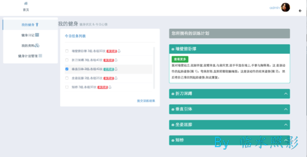
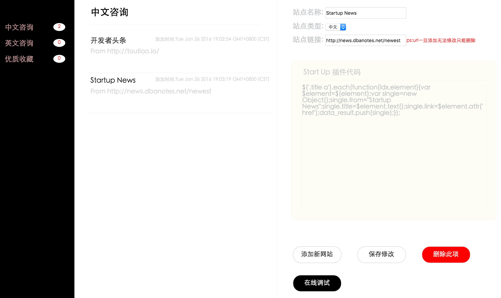

千千静阅
千千静阅是我开发的第一个Web App,当时选用的是Rails这个框架,它作为一个承载我阅读情怀的作品我个人还是比较喜欢的。因此当初第一次前后端设计架构,以及各种功能雏形都在脑海里过了一遍又一遍。
该项目源代码Github地址 Ruby, Rails,Web

个人健身系统
有段时间喜欢<<囚徒健身>>,然后捣鼓了一个个人健身管理项目。最后发现项目写完了,健身坚持了半个月就没下文了QAQ
该项目源代码Github地址 Node.js, Web Development

好巧咨询
利用爬虫进行咨询爬取，并可解析爬虫插件达到动态添加咨询来源的目的.本项目第一版是通过React完成，最终版是vue.js与Node.js配合完成
该项目源代码Github地址 Node.js, Vue.js